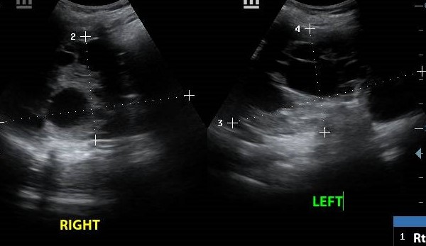
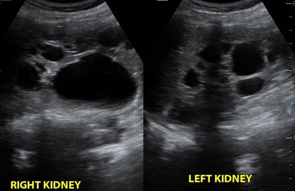
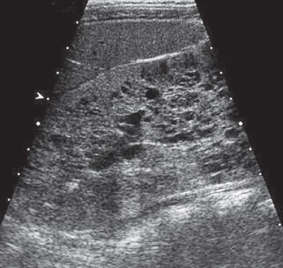
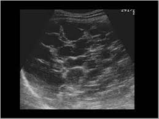

Polycystic Kidney
Autosomal dominant polycystic kidney disease (ADPKD) is the most common hereditary renal disorder and has no gender predilection. This results in a large number of bilateral cortical and medullary renal cysts and accounts for 10% to 15% of patients receiving dialysis. On the other hand, Autosomal recessive polycystic kidney disease (ARPKD) is characterized pathologically as a spectrum of dilated renal collecting tubules, hepatic cysts, and periportal fibrosis.
Clinical presentation
Patients with ADPKD usually presents with signs and symptoms of;
- Palpable mass in the flank
- Flank pain
- Hematuria
- Hypertension
- Recurrent UTIs
ARPKD is divided into four types; perinatal, neonatal, infantile, and juvenile depending on the patient's age at the onset of clinical manifestations.
- Patients with perinatal disease (perinatal) have massively enlarged kidneys, hypoplastic lungs, and oligohydramnios.
- Younger patients (neonatal) present predominantly with renal insuiciency.
- Older children (infantile) will present with manifestations of Portal Hypertension.
- Hepatic involvement is typically dominant in older patients (juvenile)
Ultrasound features
- ADPKD
- At sonography, the kidneys are enlarged and replaced by multiple bilateral, asymmetric cysts of varying size.
- Cysts complicated by hemorrhage or infection have thick walls, internal echoes, and/or fluid-debris levels.
- Dystrophic calciication within cyst walls or stones may be seen as echogenic foci with sharp, distal acoustic shadowing. - ARPKD
- The kidneys are massively enlarged echogenic with a lack of corticomedullary diferentiation
- Occasionally, macroscopic cysts will be noted.

Figure 1

Figure 2

Figure 1

Figure 2